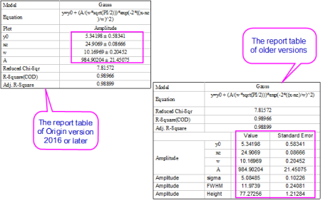
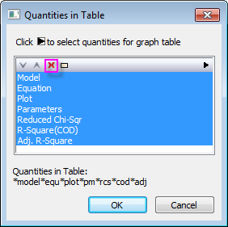
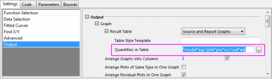
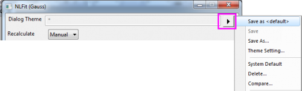

FAQ-826 Wie verwandle ich die neue Berichtstabelle Ergebnisse ± Fehler zurück in die alte Berichtstabelle Ergebnisse und Fehler in zwei Spalten im Diagramm?
How_to_revert_to_old_report_table
Letztes Update: 29.06.2018
In Origin 2016 wurde Ergebnisse ± Fehler nach der Anpassung standardmäßig in der Berichtstabelle angezeigt, während Ergebnisse und Fehler in der Vorgängerversion in zwei Spalten gezeigt werden.

Manchmal möchten Sie vielleicht nicht das Plus-Minus-Vorzeichen ± verwenden, um angepasste Parameterwerte und ihre Fehler zu verbinden. Dann können Sie die neue Tabelle in die alte zurückverwandeln, um die Parameterwerte und Fehler in zwei Spalten zu zeigen.
Um die neue Tabelle in einem existierenden Diagramm in die alte Tabelle zurückzuverwandeln:
Methode 1:
- Klicken Sie mit der rechten Maustaste auf die neue Berichtstabelle und wählen Sie dann Eigenschaften in Tabelle, um den Dialog Eigenschaften in Tabelle zu öffnen.
- Markieren Sie alle Elemente und klicken Sie auf die Schaltfläche Entfernen.
- Klicken Sie auf die Schaltfläche OK und kehren Sie zur alten Berichtstabelle.
- 
Methode 2:
- Öffnen Sie den Dialog NLFit erneut, gehen Sie zur Unterregisterkarte Ausgabe unter der Registerkarte Einstellungen und leeren Sie das Bearbeitungsfeld Eigenschaften in Tabelle.
- 
- Klicken Sie auf die Schaltfläche Fit, um die Anpassung erneut durchzuführen. Die alte Tabelle wird wieder angezeigt.
- Öffnen Sie den Dialog NLFit erneut, gehen Sie zur Unterregisterkarte Ausgabe unter der Registerkarte Einstellungen und leeren Sie das Bearbeitungsfeld Eigenschaften in Tabelle.
- Klicken Sie auf den Pfeil rechts von Dialogdesign und wählen Sie Als <Standard> speichern, um dieses Dialogdesign als <Standard> des Dialogs NLFit zu speichern.
- 
- Auf diese Weise wird diese Einstellung auf alle zukünftigen Anpassungen angewendet.
Schlüsselwörter:Berichtstabelle, Eigenschaften in Tabelle, Ergebnisse, Fehler, alte Berichtstabelle, separate Werte und Fehler, ± , Plus-Minus-Vorzeichen entfernen, Fehler unabhängig zeigen